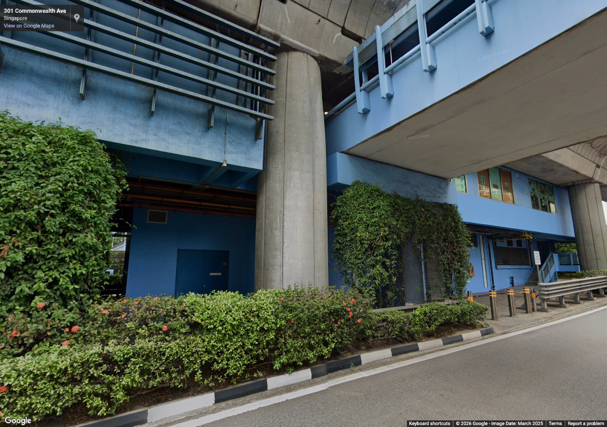
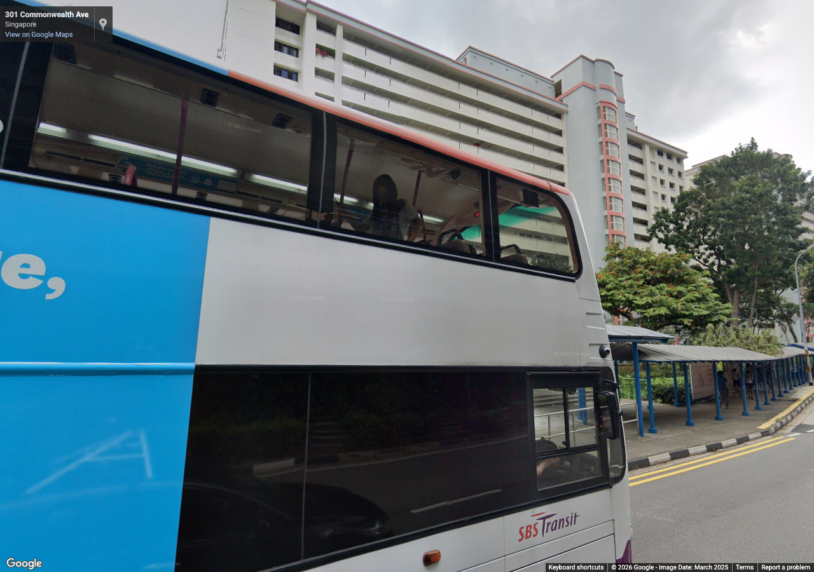
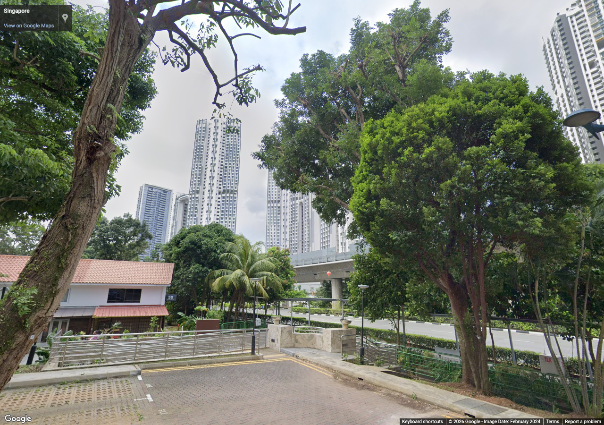
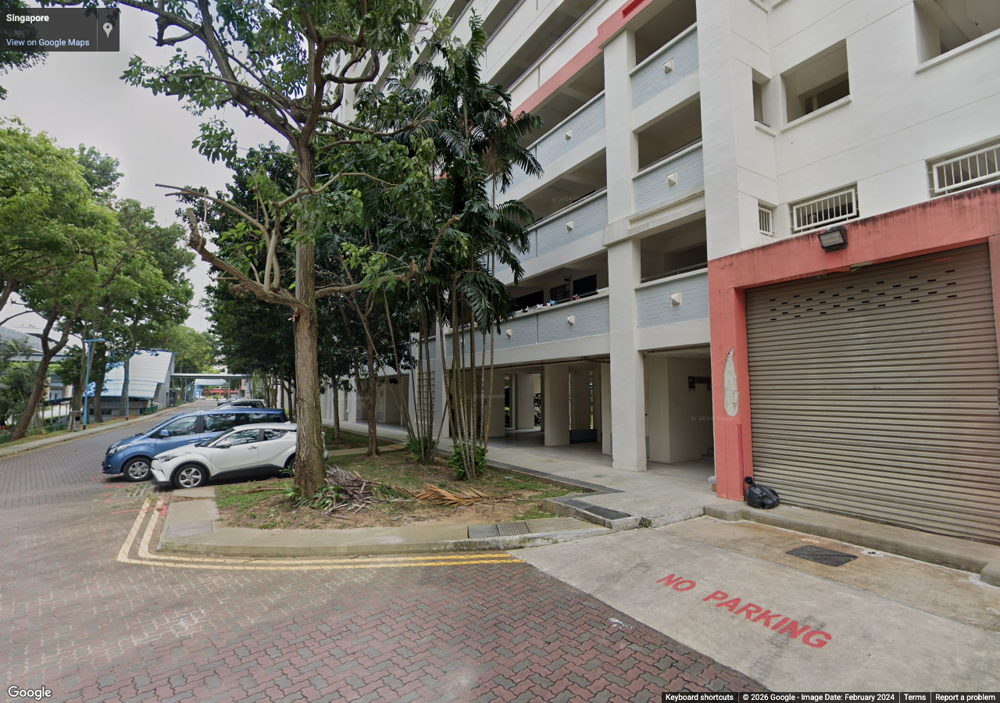

queenstown-reference-batch-01
Authorized reference screenshots. Attribution retained. Open full-size images to review clarity; capture success alone is not visual acceptance.

station-east — Queenstown elevated station form, street width and material palette
Source 2025-03, heading 90°, pitch 10°, zoom 1. Metadata / review

station-west — Queenstown station viaduct and surrounding residential context
Source 2025-03, heading 270°, pitch 8°, zoom 1. Metadata / review

estate-north — Nearby estate facade rhythm and public-space context
Source 2024-02, heading 0°, pitch 15°, zoom 1. Metadata / review

estate-south — Estate greenery, covered paths and roads
Source 2024-02, heading 180°, pitch 5°, zoom 1. Metadata / review